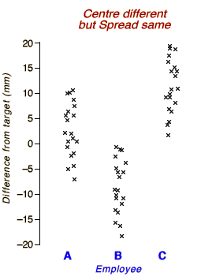
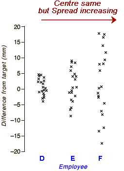

Summarising centre and spread
Most data sets exhibit variability — all values are not the same! Two aspects of the distribution of values are particularly important.
In this section, we examine how to describe centre and spread with numerical values called summary statistics. Numerical summaries of centre and spread give particularly concise and meaningful comparisons of different groups.
Three workers in a tent factory cut guy ropes by hand in lengths of 2 metres. The diagram below shows how the actual lengths of 20 guy ropes cut by each employee differ from the target lengths.
|  |
There is considerable variation in the lengths of the ropes cut by the three employees — they can be up to 20 mm off their target.
|
A numerical measure of centre should describe this tendency for employees to over- or under-cut the ropes.
A different group of three workers was given the same task in order to assess whether they could cut the ropes more accurately.
|  |
None of these three workers tends to cut the ropes too long or too short — the centres of all three distributions are close to zero. However
|
A numerical measure of spread should describe how consistently the workers can cut the ropes to length.